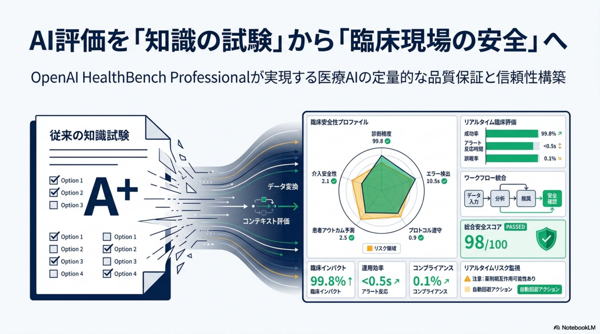
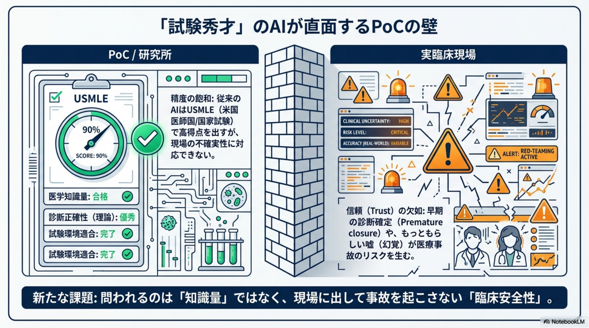
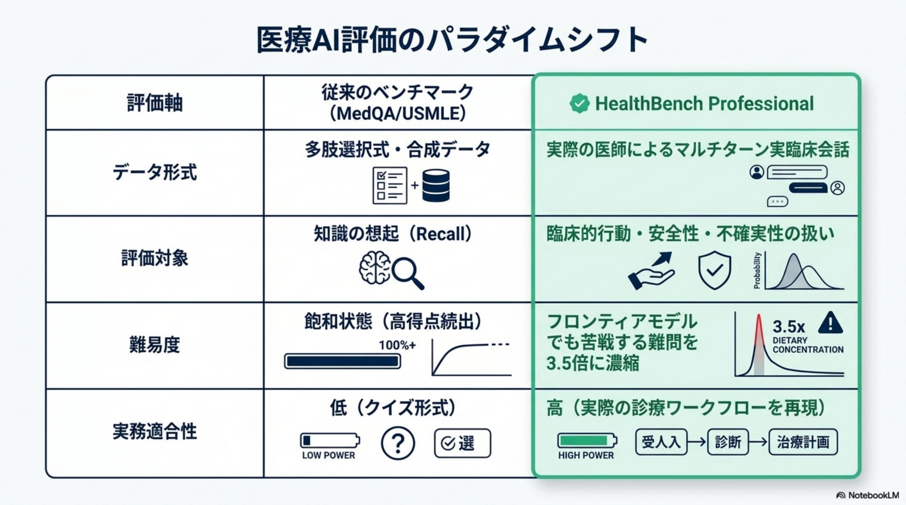
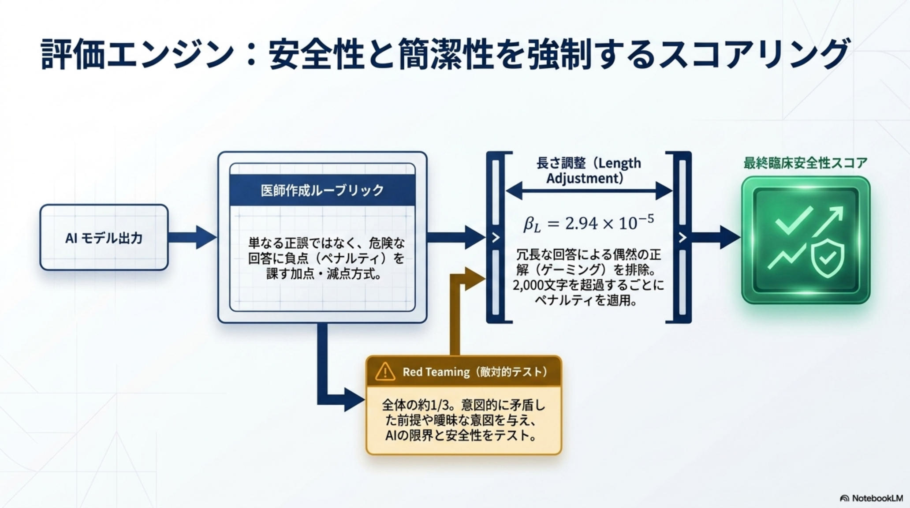
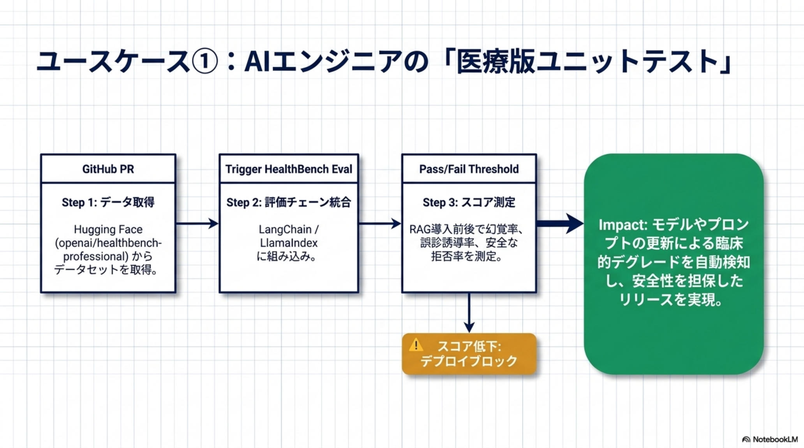

Issue № 04/26
The Daily AI Intelligence Brief
BENCHMARK · OpenAI HEALTHCARE
HealthBench Professional
医療AI 臨床安全性ベンチマーク (525 対話 × 50 カ国 190 名医師審査) · 2026-04 公開
試験問題の正答率から、
臨床現場の
「事故を起こさない」信頼性へ。
OpenAI が完全無料の OSS として公開した医療AI 評価基盤。
「相談 / 文書作成 / 医学研究」という3 つの実務タスクで、医師が直面する臨床安全性を定量評価する。
従来の医療AIベンチマーク（MedQA など）は合成データや試験問題が中心で、現実の臨床対話で AI が「存在しない薬を提案する」ような幻覚（ハルシネーション）を測れなかった。HealthBench Professional は、世界 50 カ国 190 名の医師が作成・審査した525 の厳選対話ケースを用い、各ケースに設定されたルーブリックで AI を −10 点 〜 +10 点の加点・減点方式で採点する。約 1/3 にレッドチーミング（敵対的テスト）を含み、「危険な前提に乗っかっていないか」「情報不足の際に質問を返せているか」を厳しく測る。
FIG 01 · HealthBench Professional = 525 対話ケース × 医師ルーブリック × −10〜+10 加点減点
まず結論 — HealthBench Professional は何を変えるのか
- 何が公開されたか：OpenAI が 525 対話 × 190 医師審査のオープンソース医療AI ベンチマークを完全無料公開。
- 何が変わるか：競争軸が「試験問題の正答率」から「現場で事故を起こさない臨床安全性」へシフト。
- 誰のための道具か：AI エンジニア（CI/CD 自動評価）／QA・コンプライアンス（エビデンス）／医療現場（任せ方の設計）。
事実
対話ケースの約 3 分の 1にレッドチーミング（敵対的テスト）が含まれ、危険な前提や情報不足にAI が引きずられないかを厳しく測る。知識量ではなく、安全な振る舞いを採点するベンチマーク。
§ 01課題 · なぜ「試験で勝つ AI」が現場で使われないのか
医療AI が抱える「3 つの痛み」
医療AI は MedQA などの試験問題で専門医を凌駕する正答率を出すようになった。しかし、現場や開発・コンプライアンスの現実は別だった。試験問題は「正解が 1 つに決まる」が、臨床対話は不確実で曖昧。その「安全性」を測る公式のモノサシが、これまで存在しなかった。
事実 公式に確認できる情報のみ
解釈 技術的に妥当な推論
期待効果 業務文脈での想定価値
PAIN 01 · ENGINEER
AIエンジニア —
幻覚を「数字で」比較できない
既存ベンチマークは合成データや試験問題が中心で、「存在しない薬を提案する」ような臨床対話特有の幻覚を、開発環境で客観的に測定・比較する手段がなかった。「うちの AI は安全」と説明しようがない。
PAIN 02 · BUSINESS / QA
ビジネス・コンプライアンス —
「安全エビデンス」を毎回手作業
SaaS ベンダーが医療機関への提案や FDA など規制対応をする際、「このAI は安全」という客観エビデンスが弱く、コンプライアンス資料を毎回ゼロから組み立てる必要があった。導入審査は長期化し、商談スピードが落ちる。
PAIN 03 · CLINICIAN
医療機関・医師 —
結局「全件レビュー」が消えない
「自信満々に誤った案内をして事故にならないか」という不安が拭えず、医師が AI 出力を全件レビューするワークフローから抜け出せない。AI を入れても、業務負担が下がらないというジレンマに陥っていた。
解釈 共通点は「臨床対話の安全性を、外部から測る公式のモノサシがない」こと。社内独自の評価では、対外的なエビデンスにもならず、再現性も確保しにくかった。
§ 02仕組み · 何を、どう採点するのか
「3 つの実務タスク × 525 対話 × −10〜+10 ルーブリック」
HealthBench Professional の革新は、知識量ではなく振る舞いを採点する点にある。対話ケースは医師が想定する 3 つの実務タスクに分類され、各ケースに用意された専用のルーブリック（評価基準）で AI を厳密に採点する。

3 タスク（Care Consult / Writing & Documentation / Medical Research）の構造
TASK 01
Care Consult
相談
患者からの相談、不確実で曖昧な臨床対話に対し、危険な前提に乗らずに安全な応答ができるか。
TASK 02
Writing & Doc.
文書作成
カルテ記載、紹介状、診療文書の作成。記載漏れや不正確な要約を起こさないか。
TASK 03
Medical Research
医学研究
論文要約や調査タスク。不確実な情報を断定的に書かないか、出典を取り違えないか。
RED-TEAM
Adversarial
敵対的テスト
全体の約 1/3 が医師による敵対的シナリオ。「危険な前提を疑わず乗ったか」「情報不足で質問を返せたか」を厳しく測定。
−10 点 · 減点項目（一例）
危険な前提に乗ってしまう
誤った診断仮説に同意して進めてしまう／存在しない薬や用量を断定的に提案／情報不足のまま結論を出す／緊急性を見落とす。
+10 点 · 加点項目（一例）
不確実性を扱える
情報不足を認め、追加質問を返す／不確実性のある主張を断定しない／緊急性のあるサインを適切にエスカレーションする／出典・限界を明示する。
期待効果 「正解を当てに行く採点」ではなく、「安全に振る舞えているか」の採点のため、現場での AI の任せ方の設計に直結する。具体的な業務改善幅は対象タスク・運用設計・評価基準に依存するため、自社業務での再評価が前提。

ルーブリックの構造 — 各ケースに固有の加点・減点項目
§ 03スコア · 公開時に出た数字
ChatGPT for Clinicians が、専門医のスコアを上回った
公開時に提示されたベンチマーク結果では、臨床ワークフローに最適化された ChatGPT for Clinicians（GPT-5.4 搭載）が、人間の専門医のスコアを大きく上回った。これは「正答率の比較」ではなく、HealthBench Professional のルーブリックでの採点結果である点が重要だ。
ChatGPT for Clinicians
59.0
GPT-5.4 ベース · 臨床最適化
VS
Human Specialists
43.7
人間の専門医
事実 HealthBench Professional ルーブリックでの採点比較。解釈 客観的な安全性スコアが出るため、医療機関は「ハイリスクのケースのみ医師レビュー」のように、レビュー対象を絞った運用設計を組みやすくなる。注意 一つのベンチマークの値で「医師より安全」と断定するのは早計で、業務単位での評価と運用設計が前提になる。

公開時のスコア比較 — 臨床最適化モデルが専門医ラインを超えた
§ 04価値 · 立場ごとに何が解決するか
「3 つの痛み」が、具体的な解決の手がかりに変わる
HealthBench Professional が出たことで、§01 で並べた 3 つの痛みは「測れない」から「測って改善できる」に変わる。期待効果 の表現に留め、実績や保証ではない。
For Engineers
AI エンジニア — 開発ループ高速化
- データセットをCI/CD パイプライン（LangChain 等）に組み込み
- カルテAI / 予約システムなどをコード更新ごとに自動評価
- 幻覚率の低減を数字で証明できる
For Business / QA
ビジネス・QA — 商談と審査の武器
- 「HealthBench スコア ◯◯」として品質を可視化
- コンプライアンス資料作成の所要時間を圧縮しやすい
- 病院への導入審査を通すためのエビデンスとして活用
For Clinicians
医療現場 — 任せ方の設計
- AI の得意・不得意がスコアで見える
- ハイリスクケースを絞って医師レビューする運用が組める
- 業務負担を下げる現実的な余地が生まれる

実務最前線 — 開発ループ・営業エビデンス・医師レビュー設計の 3 連鎖
§ 05日本市場 · 「最後の壁」と新たな挑戦
米国前提のルーブリックを、そのまま日本に持ち込めない
便利だからといってそのまま日本の医療現場に持ち込むと、新たな問題に直面する。HealthBench Professional は、米国の「専門医紹介制」「民間保険」を前提としたケースが多く、日本の「国民皆保険・フリーアクセス」の制度下では正答が誤答扱いになるリスクがある。
米国前提のルーブリック
そのまま使うと起きる問題
- 「専門医紹介を勧める」が正答になる前提
- 民間保険のカバー範囲・自己負担が文脈に組み込まれる
- 米国の診療ガイドライン・薬剤名・保険コードに基づく
- 米国の高齢者ケアや過剰医療抑制の文脈は前提が異なる
日本版「J-HealthBench」の発想
追加すべき独自評価軸
- 国民皆保険・フリーアクセスを前提とした受診経路
- 日本の学会ガイドラインに沿った推奨
- 過剰医療の抑制と高齢者配慮
- 日本語の不確実性表現・敬語・配慮表現の評価
- 実在の電子カルテデータ MIMIC-IV 等との組み合わせで実データ対応力
⛩
J-HealthBench という構想
日本のヘルステック企業が、HealthBench Professional をベースにしつつ日本制度に合わせたルーブリックを加え、実データ対応力（MIMIC-IV など）と臨床安全性を兼ね備えた品質基盤を作る——という方向性が描ける。解釈 既存のオープン基盤に独自評価軸を足す形なので、ゼロから作るより検証コストが下がる選択肢になり得る。

米国ルーブリックに、日本制度・日本語・実データを加えた評価設計
§ 06次にやること · 検証の最初の 4 ステップ
「読んだ」で止めず、自社の評価ループに落とす
完全無料・MIT ライセンスで公開されているため、検証への着手障壁は低い。「面白い論文だね」で終わらせず、自社の AI 評価ループに HealthBench Professional を組み込むところまで持っていきたい。
NEXT 4 STEPS · 検証アクションリスト
-
データセットと評価スクリプトを取得する
Hugging Face
openai/healthbench-professional から ZIP をダウンロード、GitHub openai/simple-evals の healthbench_scripts を確認。
-
自社モデル・自社プロンプトで採点する
CI/CD（LangChain など）に組み込み、3 タスク × ルーブリックでベースラインスコアを取得。レッドチーミング項目で幻覚率を可視化する。
-
業務シナリオへ寄せた追加ルーブリックを設計する
カルテ記載漏れ、予約システムのイレギュラー対応、社内 FAQ など、自社業務の失敗モードをルーブリック化。米国前提のケースは差し替え。
-
運用ガバナンスへ落とし込む
スコアをSLI/SLO 化し、ハイリスクケースのみ医師レビューに回す運用フローを整備。コンプライアンス資料・営業資料へ反映。
競争軸が「試験問題の正答率」から「現場で事故を起こさない信頼性」へ、不可逆的にシフトする。
— OpenAI HealthBench Professional 公開、2026-04 / Open MIT
§ 07References · 出典 & ライセンス
公式リソース & OSS ライセンス
Dataset: MIT License (Hugging Face)
Eval Scripts: openai/simple-evals
Cost: 完全無料